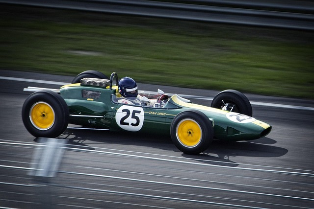
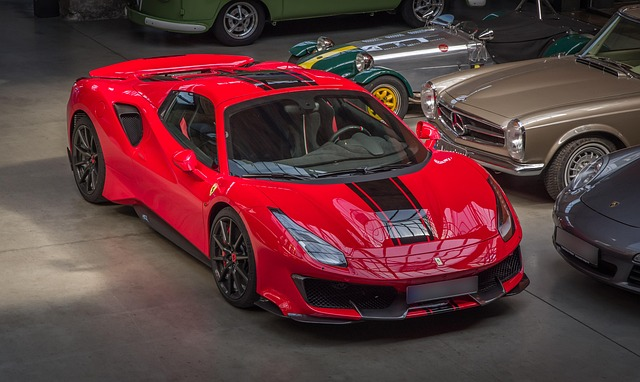

Bienvenido
Bienvenido a mi página sobre autos deportivos. Aquí encontrarás información básica sobre los autos más veloces y llamativos del mundo.
Que es un auto deportivo?
El deportivo es aquel automóvil que fue pensado y diseñado en cada detalle para circular a altas velocidades, por lo que su planta motriz debe ser potente y su comportamiento ágil y seguro a altas velocidad. Cuentan con un tratamiento especial en diferentes puntos de la carrocería, empezando por la suspensión, los frenos, algunos con una altura sobre el piso reducida, ajustes en la dirección y, por supuesto, un diseño aerodinámico que juega un papel importante, tanto en su desempeño como en su rendimiento.
Otros puntos importantes son su estética, reforzada con elementos como los neumáticos de perfil bajo, los asientos envolventes Recaro, las paletas del cambio detrás del volante, una transmisión manual o la tracción trasera. Para que un coche se considere deportivo, debe contar con un tiempo reducido de aceleración, una velocidad máxima elevada, mejor sistema de frenos y más potencia que un automóvil normal.
Un coche deportivo es aquel cuyo diseño se basa en maximizar el rendimiento por encima de lo práctico. El peso suele ser inferior a la tonelada y dispone de una altura reducida con respecto al suelo. La transmisión también está preparada para soportar los continuos cambios de velocidad de manera efectiva. Se suelen clasificar en deportivos y superdeportivos.
Son una clase de automóviles más pequeños que los convencionales, sus carrocerías suelen ser del tipo cupé y en buena parte de los casos son también descapotables. Se relacionan con el lujo y la ostentación, aunque el deportivo puro puede llegar a ser incómodo para los pasajeros. No suelen tener suficiente espacio por dentro, por lo que cuando se trata de transportar a una familia o a una persona que comúnmente lleve mucho equipaje, no resulta muy práctico.
Existen distintos tipos de automóviles deportivos, que se distinguen según sus características:
Un deportivo a secas o un roadster es un automóvil con prestaciones superiores a la media. Su tamaño suele ser cercano a automóviles de los segmentos B, C y D, aunque son más bajos que un turismo. Por ejemplo, el Porsche Cayman, el Nissan 350Z o el Honda NSX.

Roadster es la denominación de un deportivo descapotable de dos plazas. Ejemplos: el Mazda MX-5 o el BMW Z3. También existen deportivos con techo semidescapotable, que son denominados tipo "targa top", los cuales disponen de un panel desmontable. Algunos ejemplos de targa son el Lamborghini Jalpa, el Fiat X1/9 o el Toyota Supra.

Un muscle car es un deportivo fabricado por marcas estadounidenses, cuya diferencia radica en que tienen prestaciones altas a un precio asequible, además de ser consideradas "bestias brutas" por montar motores grandes en carrocerías normales y ser por lo general de dos puertas, o bien, en el caso del Dodge Charger o el Chevrolet Impala, llevar cuatro puertas. Actualmente, todavía existen ejemplos, tales como el Dodge Challenger, el Ford Mustang y el Chevrolet Camaro.

Un deportivo de altas prestaciones tiene un desempeño superior al de un deportivo «a secas», siendo más ligeros que turismos de potencia y tamaño similar. Algunos ejemplos: el Ferrari 458 Italia, Mercedes-Benz SLS AMG, Audi R8, Porsche 911, Lamborghini Miura o Nissan GT-R.

Un superdeportivo tiene prestaciones todavía mayores, debido a motorizaciones con características similares a los de carreras y al empleo de materiales exóticos en la construcción del chasis, la carrocería y demás componentes del vehículo. Su precio es consecuentemente mucho más alto que el de otros deportivos. Ejemplos son el Mercedes-Benz SLR McLaren, el Ferrari Enzo, el Porsche Carrera GT, el Bugatti Veyron, el Koenigsegg CCX/CCR o el Pagani Zonda.

Un gran turismo es más grande y pesado que otros deportivos, lo cual los favorece con una conducción deportiva en autopista, además de ser considerados también como "cupé de lujo personal". Suelen tener dos plazas delanteras y dos traseras más pequeñas, en configuración cupé 2+2. Ejemplos son el Maserati 3200 GT, el Alfa Romeo GT, el Ferrari 456, el Jaguar XK, el Aston Martin DB9 o el Ferrari 612 Scaglietti.